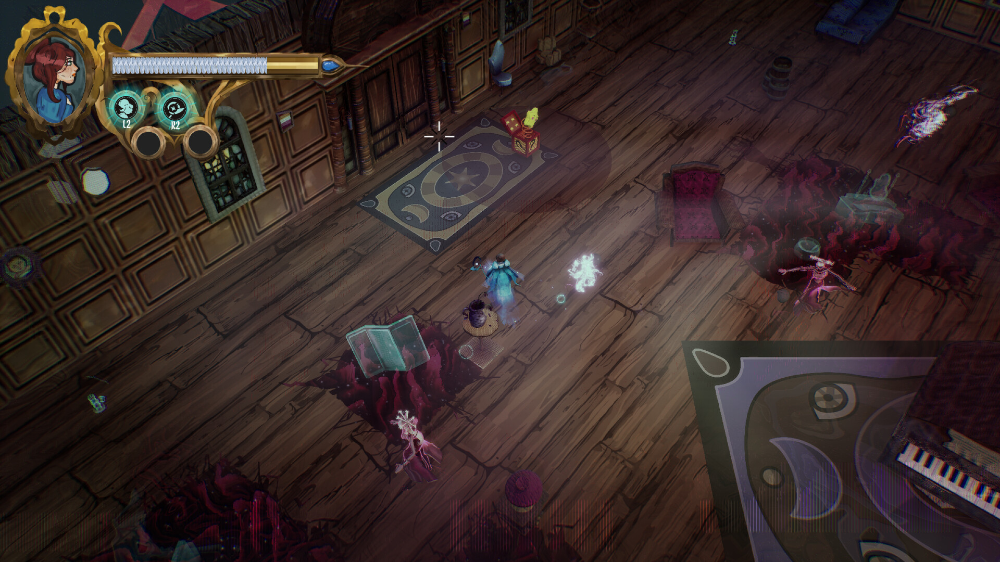
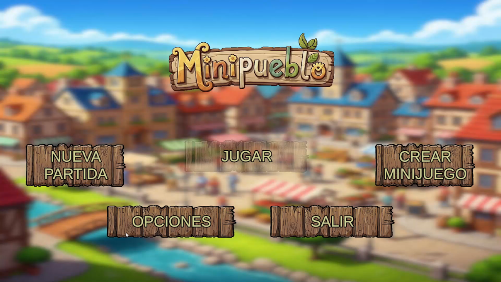
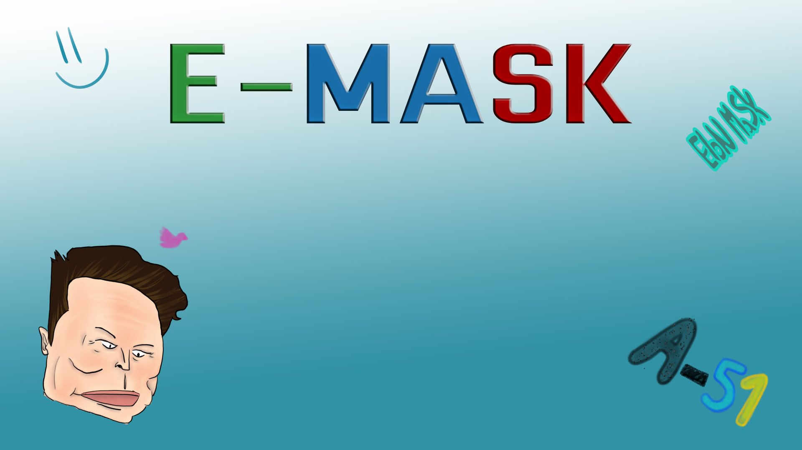
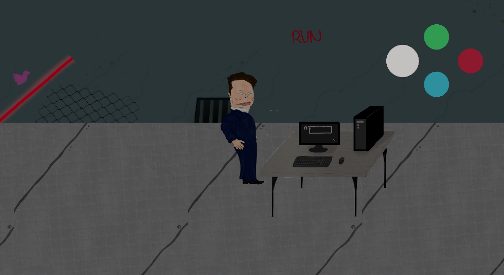
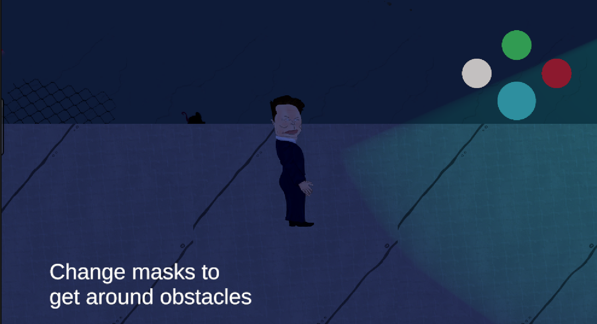

About me
Video game programmer with a game published on Steam (Unwoven) and a focus on gameplay, AI, and animation programming in Unreal Engine. Master's Degree in Video Game Programming (UCM) and Bachelor's Degree in Computer Science (UAM). Developed a custom 3D game engine and editor in C++, alongside projects using Unity. Alongside my game development background, I have professional experience in full-stack development, which has strengthened my ability to collaborate in teams, work with version control, and contribute to production environments.
Projects

Unwoven
Unwoven is a twin-stick shooter in which the player must fight through rooms filled with hordes
of enemies while unlocking new abilities and exploring a procedurally generated map.
Unreal Engine
C++
Published on Steam
Unwoven
Unwoven is a twin-stick shooter in which the player must fight through rooms filled with hordes of enemies while unlocking new abilities and exploring a procedurally generated map.
Role in the Project
As a programmer on the project, I mainly worked on the AI for the game's four enemy types: an enemy that charges at the player and explodes on contact, a mid range sniper enemy, an enemy that wanders rooms while placing traps, and a tank enemy that can only be damaged from behind. For the implementation, I used Unreal Engine tools such as EQS and Behaviour Trees.
Additionally, I implemented gameplay features such as auto-aim, healing (using Unreal Engine's Gameplay Ability System, GAS), traps, and the respawn mechanic triggered when the player dies.
Finally, I implemented the animations for the trap-setting enemy and the exploding enemy, using Unreal Engine's Animation Blueprints, Animation Montages, and Anim Notifies.
Platforms
Complete Gameplay

Game engine and editor
In order to learn and improve my C++ skills, I decided to build my own 3D game engine and
editor from scratch, the result is the PeruchoEngine. The engine comes with a set of
built-in components and allows users to create scenes and their respective entities directly
from the editor, as well as assign components to those entities.
C++
Game engine and editor
In order to learn and improve my C++ skills, I decided to build my own 3D game engine and editor from scratch, the result is the PeruchoEngine. The engine comes with a set of built-in components and allows users to create scenes and their respective entities directly from the editor, as well as assign components to those entities.
Role in the Project
As the project's author, I developed everything from scratch, relying on the raylib library for rendering and ImGui for the editor's UI. In the future, I plan to replace the raylib functions with my own rendering pipeline.
The editor, engine, and game are separated into different projects, allowing the editor to use the precompiled engine and game DLLs and recompile them whenever necessary.
The project allows users to create and delete entities, add components to entities, and modify their component parameters. It also supports creating and saving scenes, as well as simulating entity behaviour directly in the viewport.
Showcase of the editor

Minigame platform for older adults
A project that allows an administrator to create custom coloring and
board game mini-games, as well as import scenes from other Unity
projects to incorporate additional mini-games. The mini-games are designed for elderly
people and can be accessed through characters in a 3D environment (a village).
Unity
C#
Minigame platform for older adults
A project that allows an administrator to create custom coloring and board game mini-games, as well as import scenes from other Unity projects to incorporate additional mini-games. The mini-games are designed for elderly people and can be accessed through characters in a 3D environment (a village).
Role in the Project
I developed the entire project using some 3D assets and royalty-free music.
For dynamic scene loading, I used Unity Addressables, which allowed me to load new minigames into an already compiled project.
Platforms
Video showcasing the project's features

E-MASK
A side-scroller developed for the Global Game Jam, where the player controls
the character Elon Mask and must avoid traps and enemies to reach a computer and post a tweet.
Unity
C#
E-MASK
A side-scroller developed for the Global Game Jam, where the player controls the character Elon Mask and must avoid traps and enemies to reach a computer and post a tweet.
Role in the Project
I developed the shader responsible for changing the world's color and making enemies of the corresponding color disappear using Unity's Shader Lab. I also implemented the sound system through FMOD, the games UI, and detection cameras.
Platforms



Studies
Universidad Autónoma de Madrid
Universidad Complutense de Madrid
Experience
Findirect (Financiera Española de Crédito a Distancia, E.F.C., S.A.)
Unwoven (Graveyard Trials)
Steam page: https://store.steampowered.com/app/4551090/Unwoven